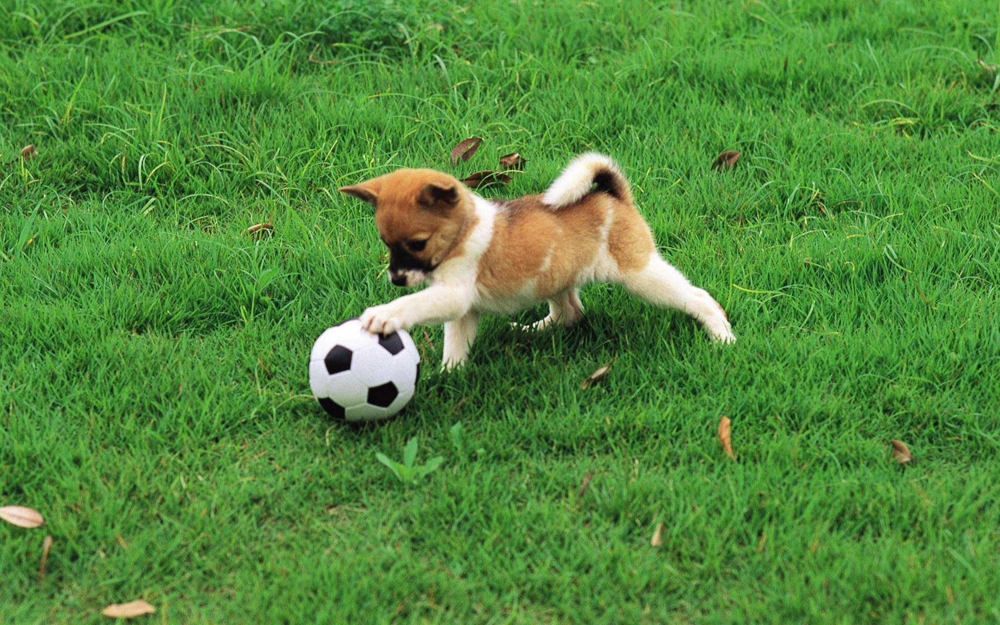

I'm having a great time!
As evidence of the great time that I'm having, here's a picture of a puppy, whose enjoyment is equal to mine.

I'm having a great time!
As evidence of the great time that I'm having, here's a picture of a puppy, whose enjoyment is equal to mine.
Just kidding, here are more pictures of dogs, and links to wikipedia articles about dogs:
This was the first kind of dog I had.

This is not a dog, but is also an animal I used to have.
Cats are the worst, but my family only has cats now, so here is a cat.
I apologize, I lied about the quantity of dogs there was going to be in that section.
To make up for it, here's information about Slow Lorises.
Slow lorises have a round head, a narrow snout, large eyes, and a variety of distinctive coloration patterns that are species-dependent. Their arms and legs are nearly equal in length, and their trunk is long and flexible, allowing them to twist and extend to nearby branches. The hands and feet of slow lorises have several adaptations that give them a pincer-like grip and enable them to grasp branches for long periods of time. Slow lorises have a toxic bite, a trait rare among mammals and unique to lorisid primates. The toxin is obtained by licking a gland on their arm, and the secretion is activated by mixing with saliva. Their toxic bite is a deterrent to predators, and the toxin is also applied to the fur during grooming as a form of protection for their infants. The secretion from the arm contains a chemical related to cat allergen, but may be augmented by secondary toxins from the diet in wild individuals. Slow lorises move slowly and deliberately, making little or no noise, and when threatened, they stop moving and remain motionless. Their only documented predators—apart from humans—include snakes, changeable hawk-eagles and orangutans, although cats, civets and sun bears are suspected. Little is known about their social structure, but they are known to communicate by scent marking. Males are highly territorial. Slow lorises reproduce slowly, and the infants are initially parked on branches or carried by either parent. They are omnivores, eating small animals, fruit, tree gum, and other vegetation.